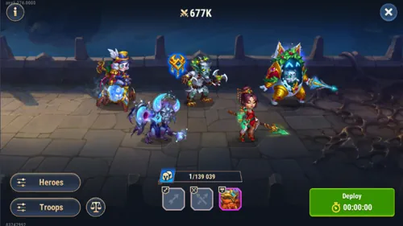
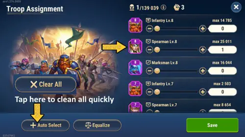
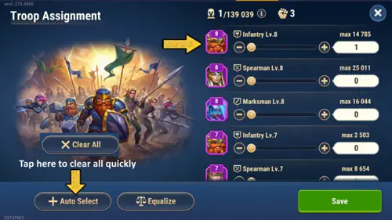

レルムPvE最強チーム – ボスラリーとモンスターLV25を突破
- 著者: Alexandre Domingos. .
⚠️ レルムPvEアップデートに関する重要なお知らせ
このガイドで紹介しているチームは、モンスターやボスに対して今でも使えます。 ただし、最近のレルムPvEアップデート以前ほど強力ではなくなっています。
開発側は、ヒーローだけでほぼ勝てる戦闘ではなく、部隊がバトルでより重要に なるようにレルムを変更しました。そのため、モンスターとボスの戦力は大きく 上がり、場合によっては最大 5倍 になっています。
部隊は現在、レルムPvEの重要な要素です。また、損失を避けるために特定の 部隊タイプを選ぶこともできなくなりました。戦闘では次のようなバランス型の 構成が使われます:
- 33.33% 歩兵
- 33.33% 槍兵
- 33.33% 射手
つまり、重要なのはより多くの部隊と、より高レベルの部隊を持つことです。 レベル9の部隊が多いほど強くなり、部隊損失も少なくなります。
下のチームはまだ使えますが、すべての状況で最良の選択肢とは限りません。 これらのチームで使われている一部のヒーローにはレルムスキルがないため、 アップデート後は以前より弱くなっています。
たとえばボス戦では、Cleaver はレルムスキルを持っていないため、 以前より有効性が下がりました。多くの場合、Julius のほうが 良い選択肢になっています。彼のシールドは部隊を守り、部隊損失を減らす助けに なるからです。
最新のランキングは、こちらのレルムTier Listを確認してください: レルム最強ヒーローTier List
現在のおすすめ
このガイドを完全に更新するまでの間は、部隊損失を減らすために、低レベルの モンスターやボスを攻撃してみてください。ここで紹介しているチームを使っても、 強すぎる敵と戦うと大きな損失が出る可能性があります。
部隊パワーのコツ
- 平日はレベル8部隊を訓練しましょう。
- 可能になったらレベル9へ昇格させましょう。
- できるだけ早く部隊キャンプをアップグレードしましょう。
- 部隊の昇格は、ゼロから新しい部隊を訓練するよりも速いことが多いです。
- 部隊ランクの差が小さいほど、昇格は速くなります。
部隊は、キャンプで解放済みの最高ランクまで、低いランクから直接昇格できます。 たとえば利用可能な最高ランクが7なら、低ランクの部隊を直接ランク7へ昇格できます。 その後、訓練キャンプをさらに高いレベルへアップグレードすれば、ランク8、そして ランク9へ昇格できるようになります。
私はすでに新しいレルムPvEの仕組みをテストしています。できるだけ早く、より良い チームでこのガイドを更新します。
みんなこんにちは。アレクサンドレゲームズのブログとYouTubeチャンネルのAlexandreです。今回は、ヒーローウォーズアライアンスのレルムで使えるPvE最強クラスの2チームを紹介する。1つはボスラリー用、もう1つはモンスター戦用だ。この2チームは低めのパワーでも勝てる可能性があり、実際にそれを確認したプレイヤーからの報告も届いている。レルムで苦戦しているなら、このガイドはかなり役に立つはず。丁寧に読んでほしい。プレイの考え方が変わると思う。
チームの話に入る前に、多くのプレイヤーが痛い目を見てから気づく大事なポイントをはっきり言っておく。レルムで本当に怖いのは敗北そのものではなく、兵を失うことだ。レルムで兵が倒されると、その兵は完全に消える。 病院はないし、回復もない。失った兵1体ごとに現実の訓練時間が必要になり、その訓練時間こそが王国パワーの伸びる速さを左右する。だから、以下のコツを読むときはこの点をずっと意識してほしい。高レベル報酬を無理に追うことより、兵を守ることの方がずっと重要だ。
下の動画では、レルムPvE最強チームを使って低パワーでBoss Rally LV5とMonster LV25を突破する内容をまとめている。 詳しい解説と細かいコツは動画のすぐ下で続けて説明している。

📋 記事の目次
ボスラリー最強チーム – ワイルドデーモン（Lv5）
チーム: ジュリアス、アイザック、チン・マオ、モージョー、ジュウ
自分の検証時パワー: 約965K

では、まずはボスラリーから見ていこう。ワイルドデーモンはLv5で戦う相手の中でもかなり厄介なボスだが、この編成ならしっかり勝てる。965Kという数字は高く見えるかもしれないが、重要なのはそこではない。実際には、もっと低いパワーでこのボスを倒したという報告も届いている。だから、まだそこまで育っていなくても落ち込む必要はない。この編成が機能する理由は、純粋な数値以上にヒーロー同士の組み合わせにある。
ラリーの良いところは、1人でやらなくていいことだ。ギルドメンバーと一緒に挑めるし、しかも同じ編成を使う人数が増えるほど、各自が失う兵の数は減り、全員の報酬も増えやすくなる。 だから、この情報はぜひギルド内で共有してほしい。ギルド全体で編成をそろえて動けると、結果はかなり変わってくる。
もう1つ大事なポイントがある。ラリーを始める前に、必ずスピアマンを最低1体は選択しておこう。この小さな違いが生存力に大きく影響し、戦闘中の兵損失を減らす助けになる。

ボスラリー攻略の実戦ポイント
ラリーをソロでやりたいなら、いきなりLv5に行くよりも、まずはDire Werewolf相手のLv4から始めるのをおすすめする。理由はシンプルで、Lv4なら最高Tierのスピアマンだけを使うことで、兵損失ゼロを狙えるからだ。本当にゼロだ。これは想像以上に大きい。
もちろん、Lv5をソロで試すこと自体は可能で、このチームなら勝てる。ただし覚悟は必要だ。自分の検証では、そこそこ戦えるパワーがあってもLv5では1戦ごとにスピアマンを20〜30体ほど失っていた。 一見すると少なく見えるかもしれないが、その損失は回数を重ねるほど効いてくる。しかも失った兵は、すべてまた最初から訓練し直さないといけない。
賢いやり方はこうだ。 まずは兵損失ゼロ、もしくは最小限で回せる一番低いラリー難度から始める。スピアマンを育成して総兵数が増えていけば、全体パワーも上がり、損失は自然に減っていく。そこで次のレベルへ進めばいい。このやり方なら、兵を無駄に削らず着実に強くなれる。
もう1つ重要なことがある。ラリーLv4とLv5の報酬差は、正直そこまで大きくない。 ドロップの多くはランダムで、Lv4でもLv5とほとんど変わらない報酬になることがある。そう考えると、わずかに良い報酬のために毎回30体近いスピアマンを失う価値が本当にあるだろうか。自分の考えでは、長期的には兵を守る方がいつでも賢い。
ラリーの要点まとめ:
• ギルドラリー（推奨）: ジュリアス、アイザック、チン・マオ、モージョー、ジュウを使い、ギルド全体で同じ編成にそろえる。
• ソロラリーLV4: 最高Tierのスピアマンだけを使用。Dire Werewolfを狙い、兵損失ゼロを目指す。
• ソロラリーLV5: 勝つことはできるが、1戦ごとに20〜30体のスピアマン損失を見込んでおく。使える兵はすべて入れて損失を減らす。兵数が十分に増えるまでは無理に挑まない。
• 基本ルール: 低いレベルから始めて積み上げること。兵を無駄に失う難度へ急いで上がらないこと。
モンスター最強チーム – ヘルナイト（Lv25）
メインチーム: アイリス、ソレイル、ネブラ、バーナ、クリーバー
自分の検証時パワー: 約934K
兵: 歩兵1体のみ（Tier 8）

次はモンスター戦について話そう。ラリーと違って、モンスター戦は完全にソロ専用だ。だからこそ、どう戦うかをさらに慎重に考える必要がある。Lv25のヘルナイトは戦えるモンスターの中でも最高クラスで、このチームなら安定して勝ちやすい。
934Kという数字は高く見えるかもしれないが、自分の知り合いはこの同じモンスターを829Kのパワーだけで突破しているし、それ以下でも勝てたという報告もいくつもある。この編成で勝てる理由は、単純なステータスではなくヒーロー同士の噛み合いにある。
クリーバーが重要な理由
このチームでとても大事な点を説明する。クリーバーは前衛タンクで、しっかり育っていないといけない。 クリーバーが早く落ちると、ダメージを受け止める役がいなくなるので、チーム全体が一気に崩れる。この編成を使って負けているなら、最初に確認すべきなのはクリーバーの育成状況だ。
特に優先したいのは、クリーバーのHPとアーマーだ。 この防御性能が高いほど、後ろのヒーローたちが十分な時間生き残り、きちんとダメージを出せる。クリーバーが早い段階で崩されると、アイリスやソレイルたちは単独では耐えられない。クリーバーは建物で言えば土台のような存在で、土台が弱ければ全体が崩れる。
1兵編成の戦い方 – これで考え方が変わる
レルムの立ち回りを大きく変えるコツがある。モンスター戦には歩兵を1体だけ（Tier 8）送ることだ。本当に1体だけでいい。かなり変に聞こえるかもしれないが、ちゃんと理屈がある。

自分がLv25モンスターに対して兵をフルで投入して試したときは、確かにすべての戦闘で勝てた。ただ、その代わりに合計でおよそ60体の兵を失った。 その60体は戻ってこない。完全に消える。そして1体ずつ、また現実の訓練時間を使って補充しなければならない。
それに対して、歩兵1体だけ（Tier 8）で挑んだ場合、自分の勝率は20戦中19勝くらいだった。つまり20回に1回くらいは負ける。ただ、ここが大事で、負けても失うのはその1体だけだ。兵フル投入で60体失うのと比べれば、この差はとても大きい。
1兵編成で負けた場合に失うものは、回復するエネルギーと、兵1体だけだ。実質的に大きなパワーダウンにはつながらない。だが、兵をフル投入して兵が倒れると、失うのは恒久的な本物の戦力であり、それを戻すには何時間もの訓練が必要になる。
負けが続くときはどうする？
ときどきモンスターの強さが急に上振れすることがある。バグなのか単なるランダム要素なのかは分からないが、明らかにおかしく強くなっていて、こちらのパワーに関係なく負ける場面がある。これは自分でも確認している。そんなときに有効なのは、負けたらマップ上の別のモンスターに切り替えることだ。同じ相手に続けて挑まないこと。別のヘルナイトに移れば、そのまま勝てることが多い。
それと、今の自分にはLv25がきついと感じるなら、Lv24やLv23まで下げるのもまったく問題ない。大事なのは、兵を失わずに報酬を回収し続けることだ。報酬はレベルごとに変わるが、場合によってはその差がリスクに見合わないこともある。
モンスターLV25向け代替チーム
代替チーム: サトリ、バーナ、ソムナ、フォリオ、オクタヴィア
パワー: 約829K
兵: スピアマン1体のみ（Tier 1）
メインチームのヒーローがそろっていないなら、この代替編成でもLv25に対応できる。しかも必要パワーはさらに低い。コミュニティのプレイヤー1人が、この編成で829Kしかない状態でも安定してモンスターを倒していた。そして注目してほしいのが兵の選び方だ。Tier 1のスピアマンを1体だけ使っている。つまり兵への投資は最小で、もし負けても損失はほとんど無視できるレベルになる。
レルムで本当に重要なのは兵管理
ここは本当に重要なので、少し丁寧に説明したい。自分も始めたばかりの頃に同じ失敗をしたし、多くのプレイヤーがここでつまずいている。レルムモードでは、兵は永久に死ぬ。 もう一度言う。永久に失われる。 他の建国系ゲームのような病院はない。兵が倒れたら終わりで、新しく1体ずつ訓練し直すしかない。そしてそれには現実の時間がかかる。
多くの人が引っかかる落とし穴はここだ。戦闘後に総パワーを見て、「179しか減ってないなら大したことない」と考えてしまう。でも、その数字にだまされてはいけない。本当のコストはパワー表示ではなく、失った兵を補充するために必要な訓練時間だ。例えばTier 8の兵573体を育てるには、約8時間46分かかる。もしT8を200体失ったらどうなるか。アカウントの進行時間が何時間分も消えることになる。
さらに見落としやすい問題もある。強いT8兵を失って再訓練すると、手元には異なるTierの兵が混ざった状態が残りやすい。総パワー表示はあまり変わっていないように見えても、実際の軍は弱くなっている。 精鋭兵を新兵で埋めているわけで、その差は本当に重要な場面ではっきり出る。
初心者が一番やりがちな失敗
レルムを始めたばかりのプレイヤーの多くがやるのがこれだ。一番強い兵（T8）を毎回すべて投入してしまう。強く進めているつもりでも、現実は逆だ。高コストの兵を減らし、育成の進みを遅らせ、もっと賢く戦っているプレイヤーに置いていかれる。
正しい考え方はシンプルだ。すべての戦闘には時間コストがある。 戦っている時間だけではなく、失ったものを補充するための時間も含まれる。うまいプレイヤーは毎回こう考える。「この報酬は、失うかもしれない兵に見合っているか？」 もし答えがノーなら、難度を下げるか、投入兵数を減らすべきだ。
レルムの正しい進め方
上位プレイヤーはこう動いている。自分と同じ遠回りをしなくて済むように、その考え方をここで共有しておく。
1. 一番強い兵を守る。 大損失が見えている戦いにT8を投げ込まないこと。代わりにT6やT7のような下位Tier兵を前線に使う。落ちやすいのは確かだが、再訓練ははるかに速い。
2. 兵舎は24時間稼働させる。 これは妥協しないこと。兵舎が止まっている1分ごとに、将来のパワーを失っている。必要ならアラームを使ってでも、毎日ずっと訓練を回し続ける。
3. 戦う相手をしっかり選ぶ。 すべての戦闘に挑む価値があるわけではない。報酬が失う可能性のある兵に見合わないなら、スキップするか低い難度へ下げる。王国パワーは短期のドロップ回収ではなく、長期的な兵の積み上げで決まる。
4. パワーではなく時間で考える。 パワーはただの数字だ。本当に大事なのは時間。訓練を止めず、兵損失を最小にしながら時間を管理できるプレイヤーは、雑に戦うプレイヤーを必ず追い抜く。
覚えておいてほしい。レルムで本当に強いプレイヤーは、単純にパワーが高い人ではない。兵の再訓練に使う無駄時間を最も減らせる人だ。
最終まとめ – 2チーム早見表
ボスラリーLV5 – ワイルドデーモン:
• ヒーロー: ジュリアス、アイザック、チン・マオ、モージョー、ジュウ
• パワー: 約965K（他プレイヤーからはもっと低いパワーでの勝利報告あり）
• 兵: 手持ちで一番高いTierのスピアマン
• おすすめの進め方: 兵損失を減らすならギルドラリー。ソロならLV4開始が安全。
モンスターLV25 – ヘルナイト（メインチーム）:
• ヒーロー: アイリス、ソレイル、ネブラ、バーナ、クリーバー
• パワー: 約934K（他プレイヤーから829Kでの勝利報告あり）
• 兵: 歩兵T8を1体だけ
• 重要点: クリーバーのHPとアーマーを高く保つ。負けたら別のモンスターへ切り替える。
モンスターLV25 – ヘルナイト（代替チーム）:
• ヒーロー: サトリ、バーナ、ソムナ、フォリオ、オクタヴィア
• パワー: 約829K
• 兵: スピアマンT1を1体だけ
基本ルール:
• レルムでは兵は永久に失われる。病院はない。
• 時間 = パワー。兵を失うたびに訓練時間も失っている。
• 兵舎は24時間回し続ける。
• 低い難度から始めて徐々に上げる。
• 兵を削りすぎるなら、その報酬に価値はない。
この内容が、みんなのレルム強化やギルド仲間のサポートに少しでも役立てばうれしい。このガイドが役に立ったなら、ぜひギルドメンバーや友だちにも共有してほしい。こうした戦い方を知っている人が増えるほど、ギルド全体が強くなる。そして、もし自分の活動を応援してくれるなら、Hub ShopではクリエイターコードALEXANDREGAMESを使ってもらえるとうれしい。ここまで読んでくれて本当にありがとう。次のガイドでまた会おう。賢くプレイしていこう！
おすすめ攻略ガイドもチェック！


感想を聞かせて！
このレルムPvE最強チームガイドは役に立った？ 分かりにくかった部分や、改善してほしいところがあればぜひ教えてほしい。アレクサンドレゲームズのブログページのコメント欄で、感想、質問、提案を自由に書いてもらって大丈夫。
下のボタンを押すとコメントを表示できる。